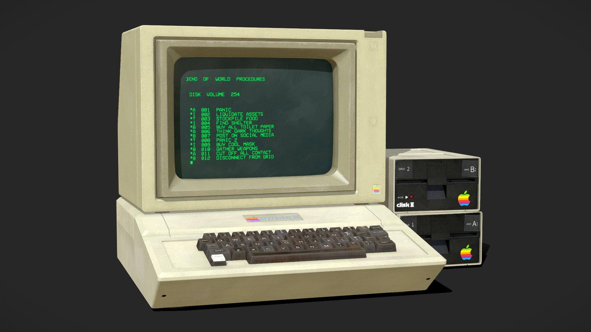
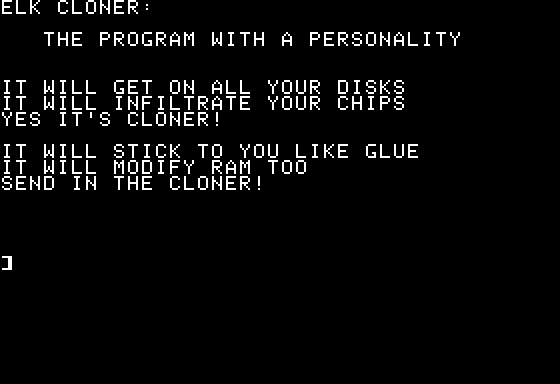

1982 - The Elk Cloner
CreationThe Elk Cloner was written for Apple II computers with the Apple DOS 3.3 operating system in Assembly language. In order to allow the virus to spread on its own, Skrenta had to find a way to modify floppy disks without actually touching them, which he was able to do so by writing a program that ran in the background, which was able to detect and modify new disks in its host computer. Skrenta further included a different serial number in the code of every infected disk he put into the world, so that every time a new infected disk made its way back to him he would know from which disk of his it originated. |
 |
|---|---|
| |
|
|  |
How it worked
As mentioned previously, the Elk Cloner traveled from one computer to
another via floppy disk. When a floppy disk was inserted into a
computer and the host computer was subsequently booted, it woul leave a
copy of itself on the computer. Then, when another floppy disk was
inserted into the computer, the virus also copied itself onto the
new floppy disk. |
| |
|
Consequences
The Elk cloner managed to successfully infect the computers of almost
everyone Skrenta knew, which was partly due to the fact that the virus
presented itself relatively late, but also because viruses weren't
common at the time and people didn't know neither their risks nor how
to protect themselves from them. |
|
Chapter History |
Jarod Facineroso |
|
|---|